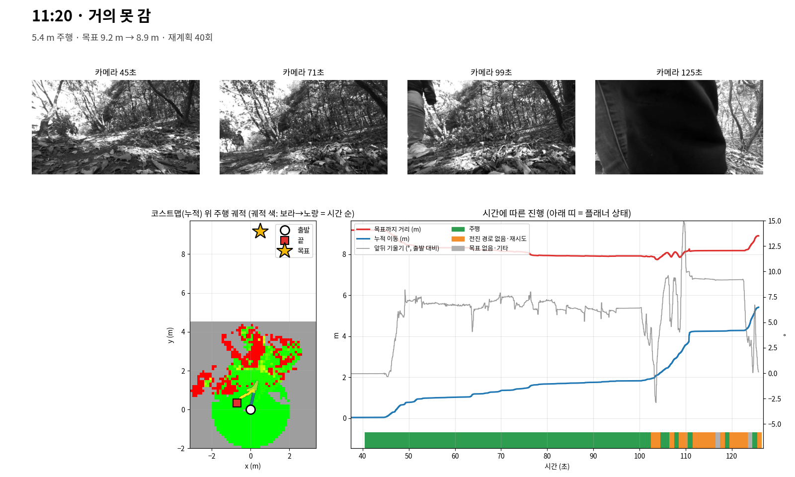

11/12 야지 #08 · 11:20 · 거의 못 감
5.4 m 주행 · 목표 9.2 m → 8.9 m · 재계획 40회
영상 없음 — 따라 찍은 휴대폰 영상이 없습니다(휴대폰 원본은 12:44부터). 로봇 기록(.nomad)만 있습니다.
주행 카드

기록 파일: 20261112_112051_394663.nomad
5.4 m 주행 · 목표 9.2 m → 8.9 m · 재계획 40회

기록 파일: 20261112_112051_394663.nomad